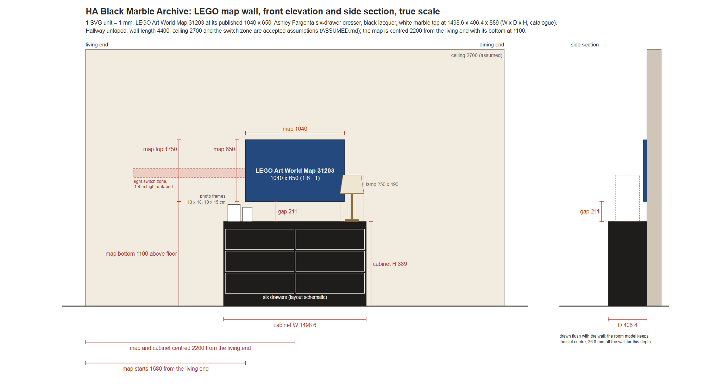
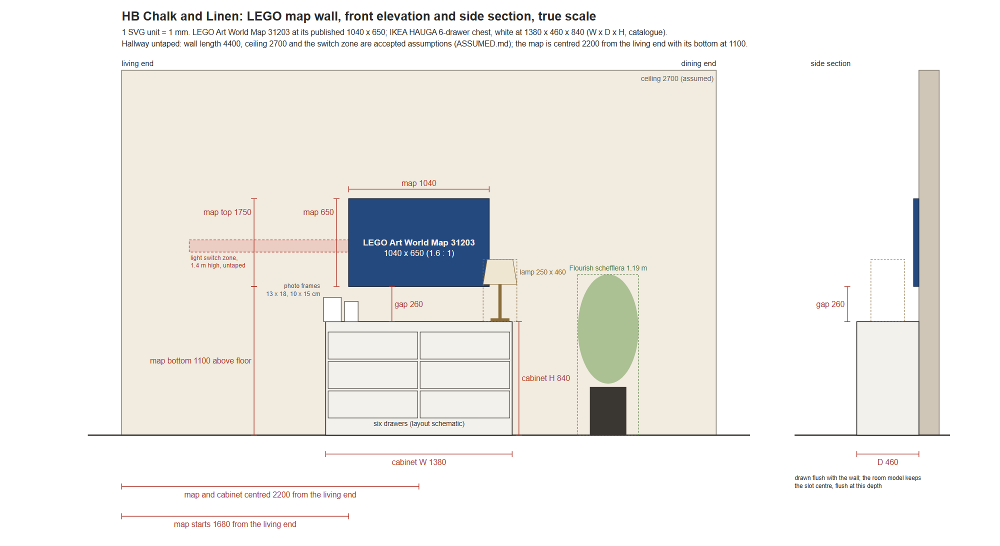
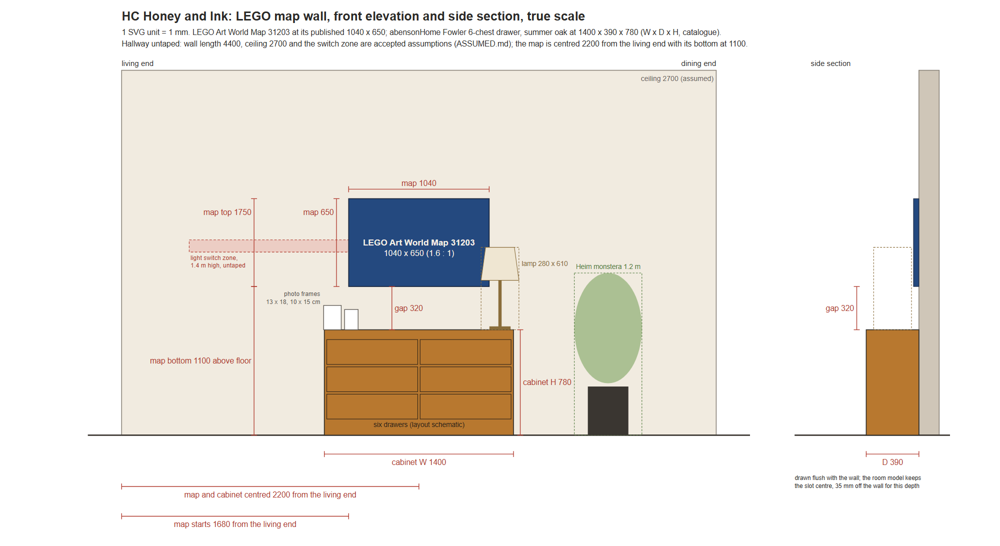

LEGO scale check
The owner's LEGO Art World Map (31203) is 104 x 65 cm, a 1.6 : 1 panel, hung over a six-drawer cabinet so photos can stand below it. Ivan, 23 Oct: “No: the hallway goes live only with the LEGO scale check in the pack.” and “Regenerate any hallway render that fails the LEGO scale check.” Each map-wall view gets at most 3 regenerations; a view that still fails is reported and not published.
1. True-scale elevations
Each design's map wall drawn to scale from its room scheme: the map, the cabinet and the gap between them.



2. Numeric check
The drawn map is 1040 x 650 mm, centred over the cabinet, with at least 150 mm above the cabinet top for photos.
| Design | Cabinet W x D x H | Map / cabinet width | Map ends inside cabinet ends | Gap above cabinet | Result |
|---|---|---|---|---|---|
| A, Black Marble Archive | 1498.6 x 406.4 x 889 mm | 0.694 | 229 mm | 211 mm | PASS |
| B, Chalk and Linen | 1380 x 460 x 840 mm | 0.754 | 170 mm | 260 mm | PASS |
| C, Honey and Ink | 1400 x 390 x 780 mm | 0.743 | 180 mm | 320 mm | PASS |
3. Rendered views
Each map-wall render is measured: the map is found from its blue studs and the cabinet from its drawer edges, then both are compared with the true-scale map projected through the view's camera. Limit ±5%. Straight on, both ratios count; at three-quarter only map to cabinet counts (the aspect, in brackets, is shown but not gated, because the image model re-angles an oblique wall). The corridor views see the wall at a grazing angle and are not measured.
| View | Map aspect | Map to cabinet | Check | Attempt | Set page | Later fixes, not published | Overlay |
|---|---|---|---|---|---|---|---|
| A, Black Marble Archive, map wall, straight on | +3.2% | +0.2% | PASS | 3 | published | attempt 4: aspect +5.2%, map to cabinet +0.7% | overlay |
| A, Black Marble Archive, map wall, three-quarter | (+18.7%) | +4.98% | PASS | 1 | published | overlay | |
| B, Chalk and Linen, map wall, straight on | −0.1% | +1.2% | PASS | 1 | published | attempt 2: aspect +4.7%, map to cabinet +5.7%; attempt 3: aspect +11.4%, map to cabinet +3.5% | overlay |
| B, Chalk and Linen, map wall, three-quarter | (+13.5%) | +2.9% | PASS | 3 | published | overlay | |
| C, Honey and Ink, map wall, straight on | +4.5% | +2.5% | PASS | 3 | published | attempt 4: aspect +20.6%, map to cabinet +20.9% | overlay |
| C, Honey and Ink, map wall, three-quarter | (+5.8%) | −4.5% | PASS | 2 | published | attempt 3: map to cabinet +5.5%; attempt 4: map to cabinet +31.4% | overlay |


Overlay colours: green, the measured map; cyan, a 1.6 : 1 map at the measured height; magenta, the measured cabinet edges; yellow dashes, where the cabinet edges would be at the true map-to-cabinet ratio. Attempt 1 is the first render from the 3:2 model views; later attempts are regenerations or render-QA fixes. A render-QA fix that failed the check is not published: the last passing render stays on the set page, and the failed fix is listed with its measurements.